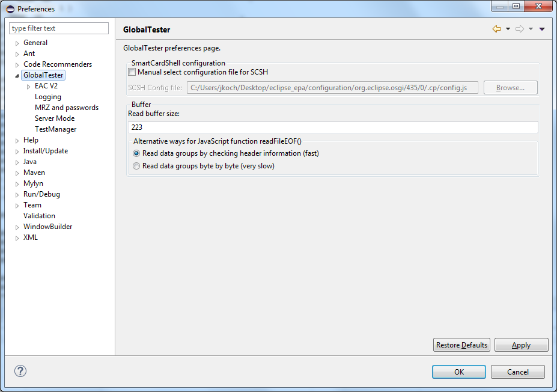

Changing general GlobalTester Preferences
In the preferences dialog select GlobalTester on the
left. Now you will see general GlobalTester options on the right hand side.

Here you can configure whether to use a special configuration file for the
SmartCardShell or not. If so you must give the location of your configuration file.